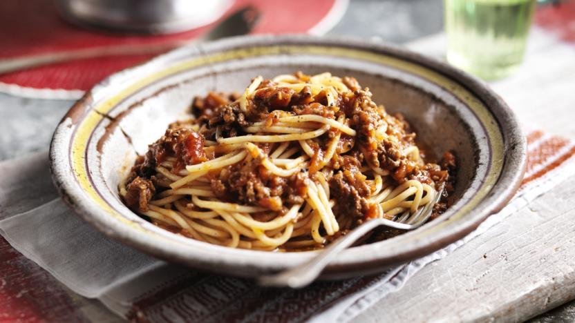

Spagbol

The disorganized kind of lasagna
Yummy like lasagna, resembles callback hell.
Ingredients
- Minced beef
- Celery
- Onion
- Crushed tomatoes
- Tomato paste
- Salt
- Thyme
- Rosemary
- Heavy cream
Steps:
- Finely chop then add to pan both onion and celery. Cook until onion is translucent.
- Add meat and cook until browned to desire.
- Add tomato paste and stir in until mixed well. 1 minute.
- Add crushed tomatoes, bring up to a consistent simmer.
- Add all the spices, not too much salt, can add more later.
- Let simmer for up to 4 hours, at least 2 hours is recommended.
- Add heavy cream during the last 30 minutes.
- Add to spag.